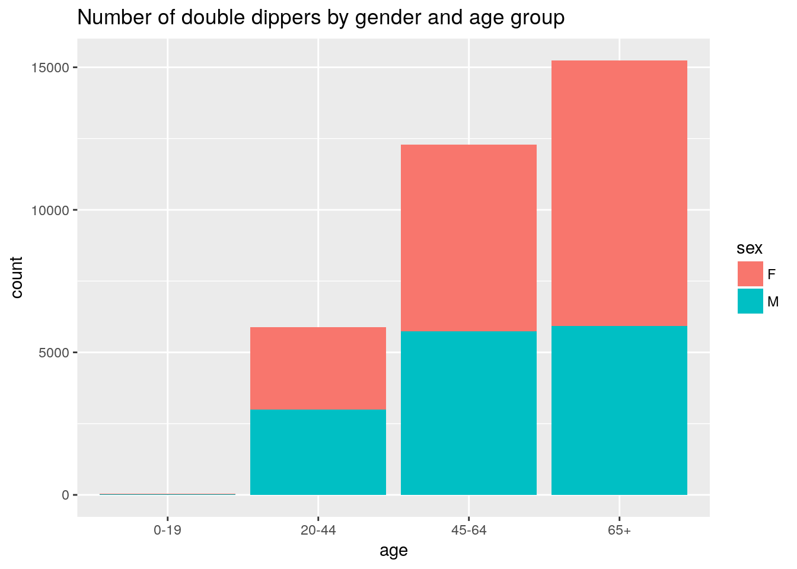
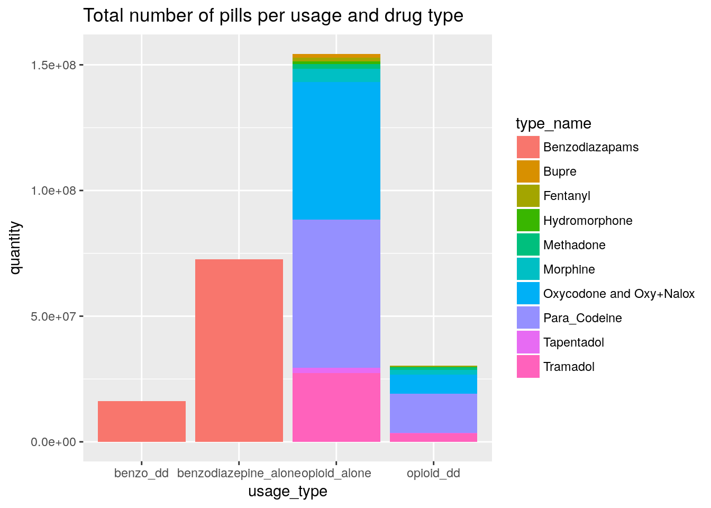
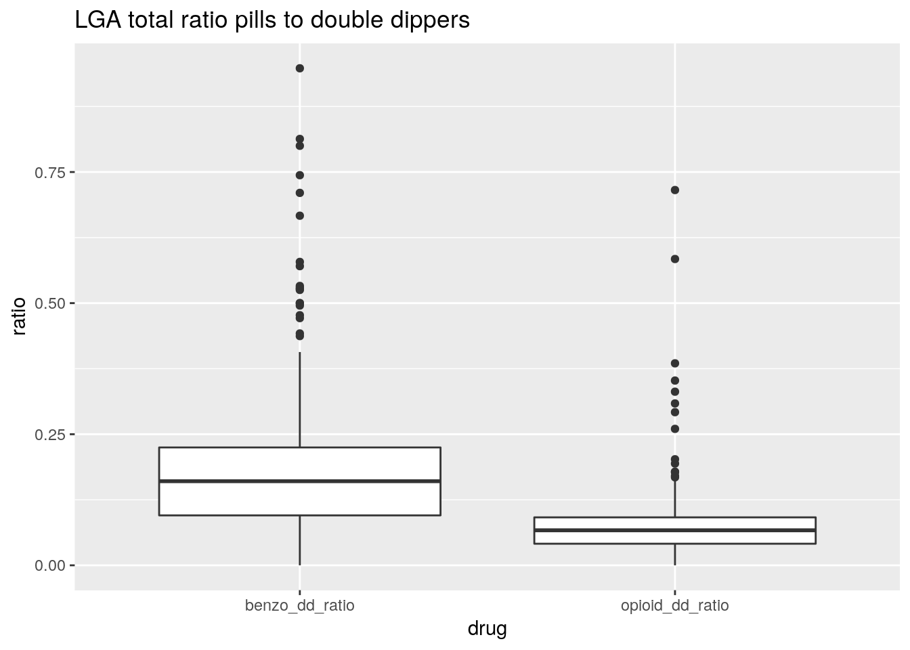

Benzo-opioid v2 analysis
Mofi Islam and Dennis Wollersheim
2018-04-30
Last updated: 2018-09-27
workflowr checks: (Click a bullet for more information)-
✔ R Markdown file: up-to-date
Great! Since the R Markdown file has been committed to the Git repository, you know the exact version of the code that produced these results.
-
✔ Environment: empty
Great job! The global environment was empty. Objects defined in the global environment can affect the analysis in your R Markdown file in unknown ways. For reproduciblity it’s best to always run the code in an empty environment.
-
✔ Seed:
set.seed(20180719)The command
set.seed(20180719)was run prior to running the code in the R Markdown file. Setting a seed ensures that any results that rely on randomness, e.g. subsampling or permutations, are reproducible. -
✔ Session information: recorded
Great job! Recording the operating system, R version, and package versions is critical for reproducibility.
-
Great! You are using Git for version control. Tracking code development and connecting the code version to the results is critical for reproducibility. The version displayed above was the version of the Git repository at the time these results were generated.✔ Repository version: db2baa1
Note that you need to be careful to ensure that all relevant files for the analysis have been committed to Git prior to generating the results (you can usewflow_publishorwflow_git_commit). workflowr only checks the R Markdown file, but you know if there are other scripts or data files that it depends on. Below is the status of the Git repository when the results were generated:
Note that any generated files, e.g. HTML, png, CSS, etc., are not included in this status report because it is ok for generated content to have uncommitted changes.Ignored files: Ignored: data/cache/
Expand here to see past versions:
| File | Version | Author | Date | Message |
|---|---|---|---|---|
| Rmd | db2baa1 | Dennis Wollersheim | 2018-09-27 | wflow_publish(“analysis/analysis.v2.Rmd”) |
| html | 4e1c00c | Dennis Wollersheim | 2018-09-27 | Build site. |
| Rmd | eabbe4c | Dennis Wollersheim | 2018-09-27 | wflow_publish(“analysis/analysis.v2.Rmd”) |
| html | d495659 | Dennis Wollersheim | 2018-09-27 | Build site. |
| Rmd | e423544 | Dennis Wollersheim | 2018-09-26 | wflow_publish(“analysis/analysis.v2.Rmd”) |
| html | 2de9790 | Dennis Wollersheim | 2018-09-26 | Build site. |
| Rmd | 9570d4f | Dennis Wollersheim | 2018-09-26 | wflow_publish(“analysis/analysis.v2.Rmd”) |
Methods
The data is from the PBS prescribing data. In this dataset, we have every opioid and benzodiazepine prescription for a 10% sample of the population, made in the period 2013-2016. In a single prescription, we have a date of supply, a drug type and strength, and the number of pills. Using the WHO DDD drug classification, we determine the total DDD for each prescription, and then we estimate the end day of the prescription to be the start day + totalDDD, rounded to the nearest day. This start and end data comprise the prescription period.
Using these prescription periods, we look for individuals with overlapping benzodiazepine and opioid prescriptions. For most of the analysis, we look for benzodiazepine / opioid pairs that overlap for at least 7 days.
Dataset summary
There are more opioid prescriptions and users than Benzodiazepine users
Total Number of Scripts with either Benzo or Opioid
| state | n |
|---|---|
| ACT | 93363 |
| NSW | 2263956 |
| NT | 31697 |
| QLD | 1761369 |
| SA | 700859 |
| TAS | 247103 |
| VIC | 2115422 |
| WA | 748117 |
Total Number of People with either Benzo or Opioid
| state | n |
|---|---|
| ACT | 11859 |
| NSW | 232882 |
| NT | 5229 |
| QLD | 169598 |
| SA | 61068 |
| TAS | 19270 |
| VIC | 210681 |
| WA | 84912 |
Total Number of People with Opioid
[1] “people”
| state | n |
|---|---|
| ACT | 9992 |
| NSW | 197521 |
| NT | 4613 |
| QLD | 143153 |
| SA | 52210 |
| TAS | 16261 |
| VIC | 177843 |
| WA | 72710 |
Total Number of People with Benzo
[1] “people”
| state | n |
|---|---|
| ACT | 4394 |
| NSW | 90051 |
| NT | 1644 |
| QLD | 73956 |
| SA | 25506 |
| TAS | 8458 |
| VIC | 88498 |
| WA | 32709 |
Methods - find overlaps
Loading objects:
df_intersect
Loading objects:
df_intersect_0break prescriptions into 4 distinct usage types;
- opioid_dd - opioid with a benzodiazepine overlapping
- benzo_dd - benzodiazepine with an opioid overlapping
- opioid_alone - opioid with no overlap
- benzo_alone - benzodiazepine with no overlap
answer mofi’s questions
how many users, total and year wise, and cc users
how many benzo users total| n |
|---|
| 325216 |
how many benzo users yearwise| supply_year | n |
|---|---|
| 2013 | 152298 |
| 2014 | 154324 |
| 2015 | 153207 |
| 2016 | 154732 |
how many opioid users total| n |
|---|
| 674303 |
how many opioid users yearwise| supply_year | n |
|---|---|
| 2013 | 266512 |
| 2014 | 279119 |
| 2015 | 286443 |
| 2016 | 290120 |
how many CC users total | n |
|---|
| 33465 |
| supply_year | n |
|---|---|
| 2013 | 16058 |
| 2014 | 16213 |
| 2015 | 15952 |
| 2016 | 15538 |
how many episodes of cc use
how many cc episodes| n |
|---|
| 960810 |
how many cc episodes yearwise| supply_year | n |
|---|---|
| 2013 | 254540 |
| 2014 | 251110 |
| 2015 | 238823 |
| 2016 | 216337 |
overlap amount exploraiton
average overlap for intersect 7| mean(diff) |
|---|
| 15.94804 days |
average overlap for intersect 1| mean(diff) |
|---|
| 8.596449 days |
Don't know how to automatically pick scale for object of type difftime. Defaulting to continuous.`stat_bin()` using `bins = 30`. Pick better value with `binwidth`.
geographic variation for CC users
Notes: 1) we multiply the percentage numbers by 10 to take into account the 10% sample 1) not standardised
- 3 different percentages, for each
# A tibble: 2,094 x 3
lga user_type n
<chr> <fct> <int>
1 . 1_benzodiazapine 1596
2 . 1_opioid 4996
3 . 2_double-dipper 376
4 . 2_seperate_times 1997
5 10050 1_benzodiazapine 270
6 10050 1_opioid 1153
7 10050 2_double-dipper 99
8 10050 2_seperate_times 424
9 10110 1_benzodiazapine 104
10 10110 1_opioid 464
# ... with 2,084 more rowsstate variation| state | 2_double-dipper | 1_benzodiazapine | 1_opioid | 2_seperate_times | population | pct_benzo | pct_opioid | pct_seperate-times | pct_pop |
|---|---|---|---|---|---|---|---|---|---|
| ACT | 400 | 1867 | 7465 | 2127 | 390706 | 2.14247 | 0.53583 | 1.88058 | 0.01024 |
| NSW | 9123 | 35361 | 142831 | 45567 | 7617684 | 2.57996 | 0.63873 | 2.00211 | 0.01198 |
| NT | 128 | 616 | 3585 | 900 | 240543 | 2.07792 | 0.35704 | 1.42222 | 0.00532 |
| QLD | 7866 | 26445 | 95642 | 39645 | 4778854 | 2.97448 | 0.82244 | 1.98411 | 0.01646 |
| SA | 3345 | 8858 | 35562 | 13303 | 2564031 | 3.77625 | 0.94061 | 2.51447 | 0.01305 |
| TAS | 1222 | 3009 | 10812 | 4227 | 516586 | 4.06115 | 1.13023 | 2.89094 | 0.02366 |
| VIC | 8044 | 32838 | 122183 | 47616 | 5937481 | 2.44960 | 0.65836 | 1.68935 | 0.01355 |
| WA | 3337 | 12202 | 52203 | 17170 | 1698660 | 2.73480 | 0.63924 | 1.94351 | 0.01964 |
seifa variation| seifa | 2_double-dipper | 1_benzodiazapine | 1_opioid | 2_seperate_times | population | pct_benzo | pct_opioid | pct_seperate-times | pct_pop |
|---|---|---|---|---|---|---|---|---|---|
| Least | 5058 | 11740 | 56703 | 19086 | 2800122 | 4.30835 | 0.89202 | 2.65011 | 0.01806 |
| Moderate | 6670 | 18021 | 86712 | 29200 | 3933108 | 3.70124 | 0.76921 | 2.28425 | 0.01696 |
| High | 11848 | 38097 | 162673 | 59019 | 7624147 | 3.10996 | 0.72833 | 2.00749 | 0.01554 |
| Very High | 9493 | 51662 | 158785 | 61123 | 9350761 | 1.83752 | 0.59785 | 1.55310 | 0.01015 |
| NA | 0 | 3 | 16 | 6 | 3240 | 0.00000 | 0.00000 | 0.00000 | 0.00000 |
urbanisation variation| urbanization | 2_double-dipper | 1_benzodiazapine | 1_opioid | 2_seperate_times | population | pct_benzo | pct_opioid | pct_seperate-times | pct_pop |
|---|---|---|---|---|---|---|---|---|---|
| Rural | 3169 | 6772 | 37088 | 11792 | 1781237 | 4.67956 | 0.85445 | 2.68742 | 0.01779 |
| Urban | 29900 | 112748 | 427785 | 156636 | 21926901 | 2.65193 | 0.69895 | 1.90888 | 0.01364 |
| NA | 0 | 3 | 16 | 6 | 3240 | 0.00000 | 0.00000 | 0.00000 | 0.00000 |
urbanisation by state variation| state | urbanization | 2_double-dipper | 1_benzodiazapine | 1_opioid | 2_seperate_times | population | pct_benzo | pct_opioid | pct_seperate-times | pct_pop |
|---|---|---|---|---|---|---|---|---|---|---|
| ACT | Urban | 392 | 1821 | 7293 | 2093 | 390706 | 2.15266 | 0.53750 | 1.87291 | 0.01003 |
| NSW | Rural | 937 | 1971 | 11623 | 3460 | 535005 | 4.75393 | 0.80616 | 2.70809 | 0.01751 |
| NSW | Urban | 8124 | 33024 | 130199 | 41688 | 7081146 | 2.46003 | 0.62397 | 1.94876 | 0.01147 |
| NT | Rural | 19 | 66 | 528 | 113 | 75783 | 2.87879 | 0.35985 | 1.68142 | 0.00251 |
| NT | Urban | 73 | 384 | 2031 | 532 | 156654 | 1.90104 | 0.35943 | 1.37218 | 0.00466 |
| QLD | Rural | 222 | 401 | 2785 | 801 | 139270 | 5.53616 | 0.79713 | 2.77154 | 0.01594 |
| QLD | Urban | 7625 | 25932 | 92644 | 38714 | 4618728 | 2.94038 | 0.82304 | 1.96957 | 0.01651 |
| TAS | Rural | 366 | 725 | 3139 | 1090 | 153118 | 5.04828 | 1.16598 | 3.35780 | 0.02390 |
| TAS | Urban | 851 | 2262 | 7623 | 3128 | 361159 | 3.76216 | 1.11636 | 2.72059 | 0.02356 |
| VIC | Rural | 649 | 1480 | 7165 | 2649 | 300754 | 4.38514 | 0.90579 | 2.44998 | 0.02158 |
| VIC | Urban | 7281 | 30921 | 114004 | 44429 | 5636727 | 2.35471 | 0.63866 | 1.63879 | 0.01292 |
state by state variation as a percentage of overall opioid users
Expand here to see past versions of mofi_question4-1.png:
| Version | Author | Date |
|---|---|---|
| 4e1c00c | Dennis Wollersheim | 2018-09-27 |
| d495659 | Dennis Wollersheim | 2018-09-27 |
| 2de9790 | Dennis Wollersheim | 2018-09-26 |
Joining, by = "pin"
Expand here to see past versions of explore_overlap-1.png:
| Version | Author | Date |
|---|---|---|
| d495659 | Dennis Wollersheim | 2018-09-27 |
| 2de9790 | Dennis Wollersheim | 2018-09-26 |
Joining, by = "pin"
Joining, by = "pin"Expand here to see past versions of explore_overlap-2.png:
| Version | Author | Date |
|---|---|---|
| d495659 | Dennis Wollersheim | 2018-09-27 |
| 2de9790 | Dennis Wollersheim | 2018-09-26 |
Joining, by = "pin"
Joining, by = "pin"what type of users do we have
number of users of each type, overall

Prescriptions that participate in double dipping

Expand here to see past versions of show_dd-1.png:
| Version | Author | Date |
|---|---|---|
| d495659 | Dennis Wollersheim | 2018-09-27 |
| 2de9790 | Dennis Wollersheim | 2018-09-26 |

Expand here to see past versions of show_dd-2.png:
| Version | Author | Date |
|---|---|---|
| d495659 | Dennis Wollersheim | 2018-09-27 |
| 2de9790 | Dennis Wollersheim | 2018-09-26 |
Percentage of population that participate in double dipping

Expand here to see past versions of show_dd_users-1.png:
| Version | Author | Date |
|---|---|---|
| d495659 | Dennis Wollersheim | 2018-09-27 |
| 2de9790 | Dennis Wollersheim | 2018-09-26 |
Percentage of double dippers scripts for each Seifa areaJoining, by = "lga"| seifa | drug | ratio |
|---|---|---|
| Least | opioid_dd_ratio | 0.0759038 |
| Moderate | opioid_dd_ratio | 0.0780271 |
| High | opioid_dd_ratio | 0.0763066 |
| Very High | opioid_dd_ratio | 0.0734643 |
| NA | opioid_dd_ratio | 0.0000000 |
| Least | benzo_dd_ratio | 0.1743112 |
| Moderate | benzo_dd_ratio | 0.1695259 |
| High | benzo_dd_ratio | 0.1616193 |
| Very High | benzo_dd_ratio | 0.1179768 |
| NA | benzo_dd_ratio | 0.0000000 |
Percentage of double dippers scripts for each Urbanization areaJoining, by = "lga"| urbanization | drug | ratio |
|---|---|---|
| Rural | opioid_dd_ratio | 0.0801457 |
| Urban | opioid_dd_ratio | 0.0754489 |
| Rural | benzo_dd_ratio | 0.2155280 |
| Urban | benzo_dd_ratio | 0.1457384 |
Percentage of double dippers scripts for each drug type | type_name | ratio |
|---|---|
| Bupre | 0.0175296 |
| Fentanyl | 0.1687585 |
| Hydromorphone | 0.1568147 |
| Methadone | 0.3332271 |
| Morphine | 0.1776448 |
| Oxycodone and Oxy+Nalox | 0.0709455 |
| Para_Codeine | 0.0727046 |
| Tapentadol | 0.1117834 |
| Tramadol | 0.0825633 |
Percentage of double dippers scripts for each drug type 
Expand here to see past versions of show_dd_users-2.png:
| Version | Author | Date |
|---|---|---|
| d495659 | Dennis Wollersheim | 2018-09-27 |
| 2de9790 | Dennis Wollersheim | 2018-09-26 |
Ratio of double dippers scripts for each state| state | drug | ratio |
|---|---|---|
| ACT | opioid_dd_ratio | 0.0785759 |
| NSW | opioid_dd_ratio | 0.0739319 |
| NT | opioid_dd_ratio | 0.0604328 |
| QLD | opioid_dd_ratio | 0.0880393 |
| SA | opioid_dd_ratio | 0.0873658 |
| TAS | opioid_dd_ratio | 0.0929385 |
| VIC | opioid_dd_ratio | 0.0778827 |
| WA | opioid_dd_ratio | 0.0759319 |
| ACT | benzo_dd_ratio | 0.1680395 |
| NSW | benzo_dd_ratio | 0.1532053 |
| NT | benzo_dd_ratio | 0.1590121 |
| QLD | benzo_dd_ratio | 0.1751507 |
| SA | benzo_dd_ratio | 0.1859032 |
| TAS | benzo_dd_ratio | 0.2226984 |
| VIC | benzo_dd_ratio | 0.1460932 |
| WA | benzo_dd_ratio | 0.1750369 |
| # DDD |
Warning: Ignoring unknown aesthetics: zWarning: Column `LGA_CODE11`/`lga` joining factor and character vector, coercing into character vectorLinking to GEOS 3.5.1, GDAL 2.2.1, proj.4 4.9.3
Expand here to see past versions of shiny-1.png:
| Version | Author | Date |
|---|---|---|
| d495659 | Dennis Wollersheim | 2018-09-27 |
| 2de9790 | Dennis Wollersheim | 2018-09-26 |
Warning: Ignoring unknown aesthetics: z[1] "#B66D68FF" "#6B7598FF" "#958600FF" "#6C7A51FF" "#7D687DFF" "#A06CABFF"Warning in tm_format_World(): tm_format_World is deprecated as of tmap version 2.0. Please use tm_format("World", ...) insteadWarning in tm_style_cobalt(): tm_style_white is deprecated as of tmap version 2.0. Please use tm_style("cobalt", ...) insteadNote that tm_style("cobalt") resets all options set with tm_layout, tm_view, tm_format, or tm_legend. It is therefore recommended to place the tm_style element prior to the other tm_layout/tm_view/tm_format/tm_legend elements.Expand here to see past versions of shiny-2.png:
| Version | Author | Date |
|---|---|---|
| d495659 | Dennis Wollersheim | 2018-09-27 |
| 2de9790 | Dennis Wollersheim | 2018-09-26 |
Warning: Package `gridGraphics` is required to handle base-R plots. Substituting empty plot.
Session information
R version 3.4.4 (2018-03-15)
Platform: x86_64-pc-linux-gnu (64-bit)
Running under: Ubuntu 17.10
Matrix products: default
BLAS: /usr/lib/x86_64-linux-gnu/openblas/libblas.so.3
LAPACK: /usr/lib/x86_64-linux-gnu/libopenblasp-r0.2.20.so
locale:
[1] LC_CTYPE=en_AU.UTF-8 LC_NUMERIC=C LC_TIME=en_AU.UTF-8 LC_COLLATE=en_AU.UTF-8 LC_MONETARY=en_AU.UTF-8 LC_MESSAGES=en_AU.UTF-8 LC_PAPER=en_AU.UTF-8
[8] LC_NAME=C LC_ADDRESS=C LC_TELEPHONE=C LC_MEASUREMENT=en_AU.UTF-8 LC_IDENTIFICATION=C
attached base packages:
[1] grid stats4 parallel stats graphics grDevices utils datasets methods base
other attached packages:
[1] ggpubr_0.1.7 sf_0.6-3 bindrcpp_0.2.2 keyring_1.1.0 RPostgreSQL_0.6-2 DBI_1.0.0 tricolore_1.0.3 ggtern_2.2.1
[9] tmaptools_2.0 tmap_2.0 forcats_0.3.0 dplyr_0.7.6 purrr_0.2.5 readr_1.1.1 tidyr_0.8.1 tibble_1.4.2
[17] ggplot2_2.2.1 tidyverse_1.2.1 multidplyr_0.0.0.9000 IRanges_2.12.0 S4Vectors_0.16.0 BiocGenerics_0.24.0 fuzzyjoin_0.1.4 DataCache_0.9
[25] wrapr_1.5.1 readstata13_0.9.2 lubridate_1.7.4 knitr_1.20 stringr_1.3.1 magrittr_1.5 workflowr_1.1.1 nvimcom_0.9-75
loaded via a namespace (and not attached):
[1] readxl_1.1.0 backports_1.1.2 lwgeom_0.1-4 plyr_1.8.4 lazyeval_0.2.1 sp_1.3-1 jqr_1.0.0 crosstalk_1.0.0 leaflet_2.0.1
[10] geojsonlint_0.2.0 digest_0.6.15 foreach_1.4.4 htmltools_0.3.6 fansi_0.2.3 modelr_0.1.2 bayesm_3.1-0.1 R.utils_2.6.0 colorspace_1.3-2
[19] rvest_0.3.2 jsonvalidate_1.0.0 haven_1.1.2 rgdal_1.3-3 crayon_1.3.4 jsonlite_1.5 bindr_0.1.1 iterators_1.0.10 glue_1.3.0
[28] gtable_0.2.0 webshot_0.5.0 compositions_1.40-2 V8_1.5 DEoptimR_1.0-8 scales_0.5.0 Rcpp_0.12.18 viridisLite_0.3.0 xtable_1.8-2
[37] spData_0.2.9.0 units_0.6-0 foreign_0.8-70 latex2exp_0.4.0 htmlwidgets_1.2 httr_1.3.1 RColorBrewer_1.1-2 pkgconfig_2.0.1 XML_3.98-1.12
[46] R.methodsS3_1.7.1 utf8_1.1.4 tidyselect_0.2.4 labeling_0.3 rlang_0.2.2 later_0.7.3 munsell_0.5.0 cellranger_1.1.0 tools_3.4.4
[55] cli_1.0.0 broom_0.5.0 evaluate_0.10.1 yaml_2.1.19 robustbase_0.93-1.1 satellite_1.0.1 nlme_3.1-137 whisker_0.3-2 mime_0.5
[64] R.oo_1.22.0 xml2_1.2.0 rmapshaper_0.4.0 compiler_3.4.4 rstudioapi_0.7 curl_3.2 png_0.1-7 e1071_1.6-8 stringi_1.2.3
[73] highr_0.7 rgeos_0.3-28 lattice_0.20-35 classInt_0.2-3 tensorA_0.36.1 pillar_1.3.0 cowplot_0.9.3 maptools_0.9-2 geojsonio_0.6.0
[82] raster_2.6-7 mapview_2.4.0 httpuv_1.4.5 R6_2.2.2 promises_1.0.1 KernSmooth_2.23-15 gridExtra_2.3 codetools_0.2-15 gdalUtils_2.0.1.14
[91] dichromat_2.0-0 boot_1.3-20 energy_1.7-4 MASS_7.3-50 assertthat_0.2.0 proto_1.0.0 rprojroot_1.3-2 geojson_0.2.0 hms_0.4.2
[100] class_7.3-14 rmarkdown_1.10 git2r_0.23.0 shiny_1.1.0 base64enc_0.1-3 This reproducible R Markdown analysis was created with workflowr 1.1.1